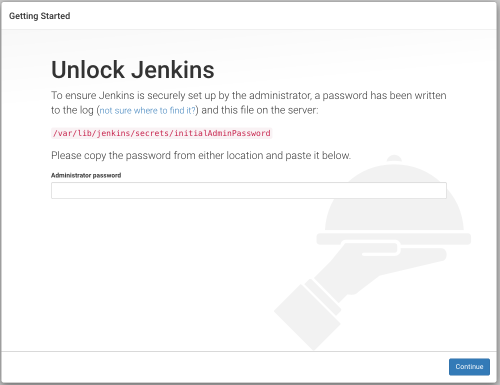
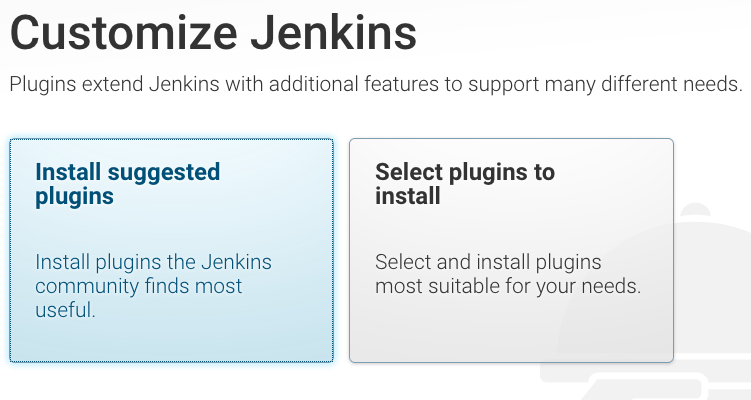
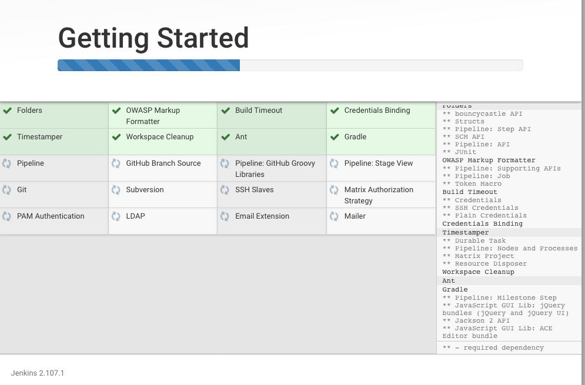
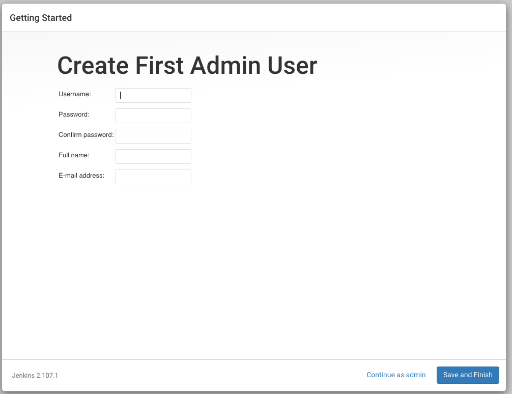
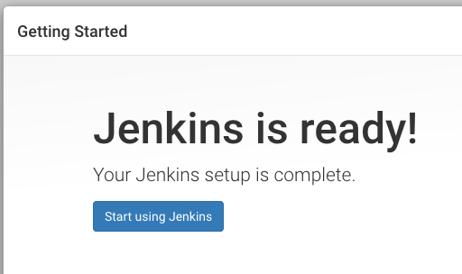

Install Jenkins on Ubuntu
In order to experiment with Jenkins, I am going to use Vagrant and VirtialBox to set up a box running Ubuntu 17.10.
Install Vagrant and VirtualBox
Nothing special, you just need to install the two applications with using the standard installation process of your operating system. Download Vagrant and VirtialBox and intsall them both.
Set up the Ubuntu 17.10 box using Vagrant
Create an empty directory and in that directory create a file called Vagrantfile (no extension) with the following content:
Vagrant.configure(2) do |config|
config.vm.box = "generic/ubuntu1710"
config.vm.network "forwarded_port", guest: 8080, host:8080
#config.vm.synced_folder "/Users/gabor/work", "/vagrant"
config.vm.provider "virtualbox" do |vb|
vb.memory = "512"
end
end
Open a terminal window or in MS Windows a Command window. Change to the directory you created for our work. Then type in
vagrant up
This will take some time as it first downloads an Ubuntu image and then it will create a VirtualBox and set up the Ubuntu image as a new Virtual Box. (It took me about 5-10 minutes.)
Once it completed the createtion successfully you can log in to the machine by typing:
vagrant ssh
Install Jenkins
Execute the following commands inside the VirtualBox image (after you ran vagrant ssh and were logged in to the Virtual Box).
examples/jenkins/sudo.txt
sudo apt-get update
sudo apt-get -y upgrade
wget -q -O - https://pkg.jenkins.io/debian-stable/jenkins.io.key | sudo apt-key add -
echo "deb https://pkg.jenkins.io/debian-stable binary/" | sudo tee -a /etc/apt/sources.list > /dev/null
sudo apt-get update
sudo apt-get install -y jenkins
Check if Vagrant is running
From inside the Virtual Box images you can run the following command:
curl http://localhost:8080/
You will most likely get some message about being forbidden. That's actually a good sign.
Set up Vagrant
Visit the newly installed Jenkins using your regular browser on your computer by following this URL:
http://localhost:8080/login?from=%2F
You should see something like this:

Basically the following text:
Unlock Jenkins
To ensure Jenkins is securely set up by the administrator, a password has been written to the log (not sure where to find it?) and this file on the server:
/var/lib/jenkins/secrets/initialAdminPassword
Please copy the password from either location and paste it below.
Administrator password
On the command line type in the following:
sudo cat /var/lib/jenkins/secrets/initialAdminPassword
This will print the password. Something like this:
da3160af7d0f4c8db649d4b8000380a6
Copy that string and paste in the above window.
The next page will offer you to Customize Jenkins:

Select Install suggested plugins
You will see a progress window saying Getting Started:

After a while it finished and shows a new page asking you to Create Firs Admin User:

I typed in "foobar" as the username, "Foo Bar" as the Full name and my real e-mail address.
Then that's done you will see a page confirming our success:


Published on 2018-07-15